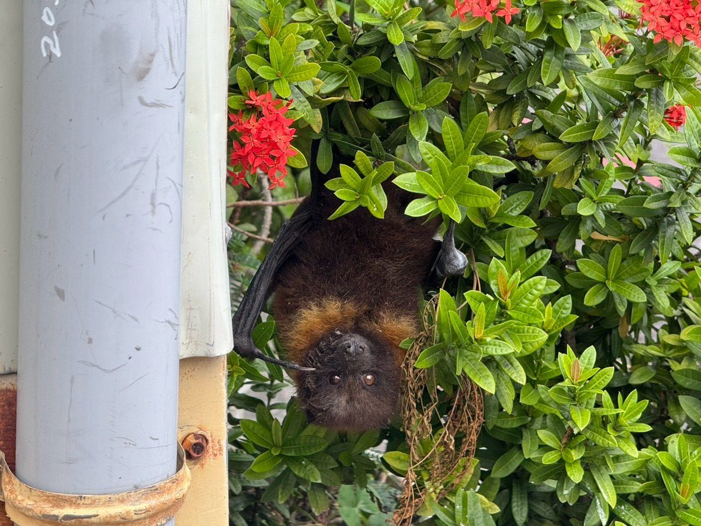

花蓮市公所側門驚見落難臺灣狐蝠 公私協力接力救援送醫

可樂電子報小編/編輯
花蓮市公所同仁10日上午8時許，在市公所側門復興街一帶發現一隻落難的臺灣狐蝠，隨即通報相關單位，並聯繫長期投入狐蝠解說工作的阿任老師到場協助。公所同仁與專業救援人員接力合作，順利將這隻珍貴的保育類野生動物救起，後續交由專業醫療團隊接手照護，整個過程也展現公私協力守護生態的效率。
救援過程中，公所同仁在現場擺設交通錐、協助維持交通秩序，並提醒往來人車減速慢行，阿任老師也呼籲民眾保持適當距離，避免驚擾野生動物。最終由農業部林業及自然保育署花蓮分署朱姓獸醫師，在鄰近戶政事務所的店家花盆中順利尋獲狐蝠，經初步傷勢檢查後，送往池上野灣動物醫院接受專業醫療照護。

這次及時發現與妥善處置，除了展現平時生態保育與環境教育工作的成果，也有效避免落難狐蝠因長時間暴露於戶外，遭受其他外力干擾或攻擊而產生二次傷害。透過公所同仁、民間保育力量與專業單位的即時合作，讓這隻珍貴的野生動物能在第一時間獲得最妥善的照護，也為現場民眾上了一堂生命教育課。
花蓮市長魏嘉彥持續關心此次臺灣狐蝠的救援情形，並重視花蓮市珍貴野生動物的保育工作。他表示，花蓮擁有豐富的自然生態資源，野生動物的保護需要公部門、專業團隊與市民共同努力，市公所將持續推廣生態保育觀念，鼓勵民眾以正確方式關懷野生動物，共同營造人與自然和諧共存的友善環境，讓花蓮成為野生動物的安全家園。
臺灣狐蝠為臺灣珍貴的保育類野生動物，生存與環境生態息息相關。花蓮市周邊擁有豐富多元的自然生態環境，加上食源植物種類豐富，提供臺灣狐蝠良好的棲息與覓食條件，也讓花蓮市成為臺灣狐蝠重要的活動區域，顯示都市與自然環境仍有共存的可能。期盼此次獲救的狐蝠在專業團隊照護下逐步恢復健康，未來平安返回適合的自然棲地。
花蓮市公所呼籲，若發現臺灣狐蝠或其他需要救援的野生動物，可通報林業及自然保育署花蓮分署、花蓮縣動植物防疫所、花蓮縣政府農業處，或撥打1999縣民服務專線。發現落難野生動物時切勿自行餵食、捕捉或搬動，應保持安全距離、避免圍觀干擾，靜待專業救傷人員到場處理，讓每一次及時發現都成為生命延續的契機。
🌟 掌握花蓮在地第一手資訊・歡迎訂閱追蹤
深度紀實報導、在地精采影音專題，第一時間接收最新消息！